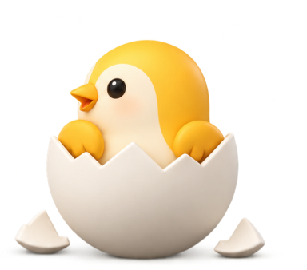
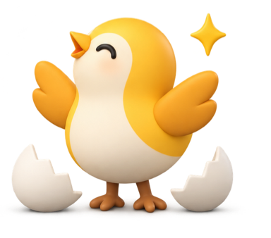

NESTYK · Honey & Cream Hatch
มาสคอต 2.5D clay จาก PNG v3 — Idle วน 6.2s · Success ฟักครั้งเดียวแล้วค้าง + ประกายวน
Idle · กำลังรอ
ไข่ขยับ → ร้าว → แง้มดูเล็กน้อย → หลบกลับ → เริ่มใหม่
ทดลองกด «จำลองสำเร็จ» ตอนต้น / กลาง / ท้ายลูป Idle — สลับโหมดไม่บังคับโหลดไฟล์ซ้ำ (Replay เท่านั้นที่รีสตาร์ทแอนิเมชัน)
Idle SVG
6.2s infinite · แง้มดูเล็กน้อย
Success SVG
ฟักครั้งเดียว · ประกาย infinite
ต้นแบบ PNG (พื้นโปร่ง):


Reduce Motion = ภาพนิ่ง · ไฟล์เดิมยังอยู่ที่ nestyk-egg-idle.svg / nestyk-egg-hatch.svg / preview.html